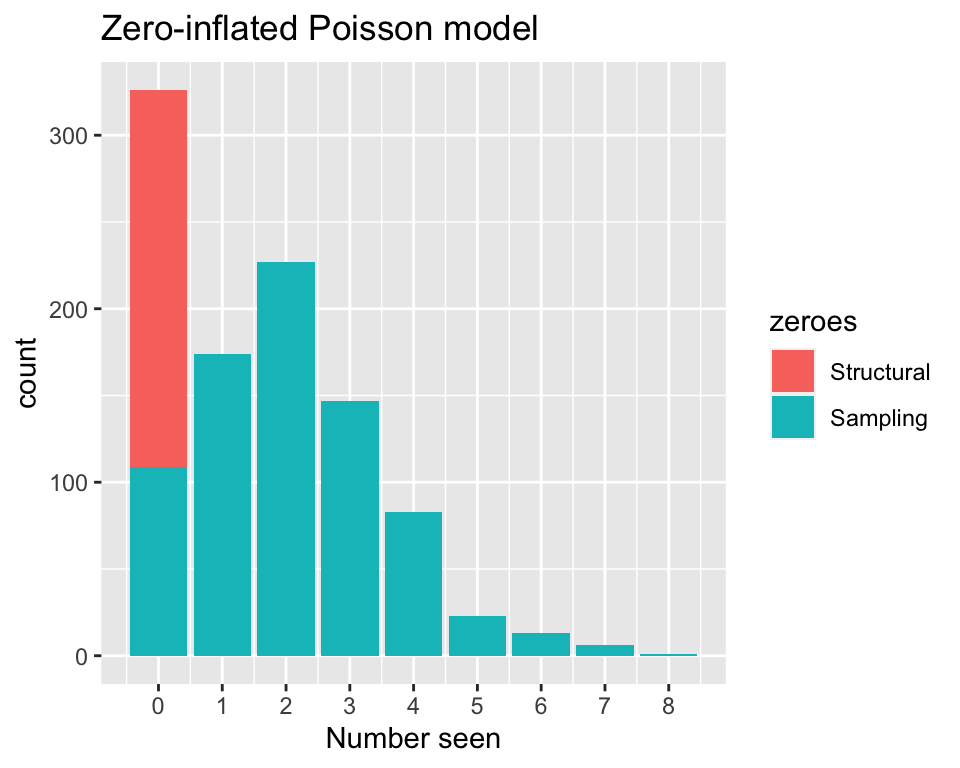
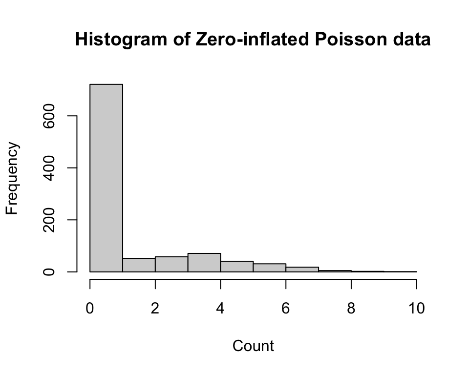

Zero-Inflated Poisson
Introduction
Poisson regression is used for count and rate data, but if may not be the best model when there are excess zeroes in that data, which is when we may use Zero-inflated poisson regression instead. ZIP models have one parameter representing the probability of a structured zero, and another representing the Poisson mean. The ZIP distribution has the parameters \(\pi\) and \(\lambda\), denoted by \(ZIP(\pi, \lambda)\), with this probability mass function.
\[\begin{equation} P(X=k) = \begin{cases} \pi + (1-\pi)(exp(-\lambda)) & \text{if $k = 0$}\\ (1-\pi)exp(-\lambda)\frac{\lambda^k}{k!} & \text{if $k = 1, 2, 3, ...$}\\ \end{cases} \end{equation}\]The figure below shows a zero-inflated Poisson model, where the zeros are either sampling zeros or structural zeros.
Uses
An example of when ZIP-distributed count happens is when ecologists counting plants or animals get a zero when the species is absent at many sites, but get a Poisson distributed count when they are present. Another example is for estimating the the dental health of individuals, by counting how many dental cavities there are. Most people have 0 dental cavities as children, so this is a good use case for ZIP.
Assumptions
- It follows the same assumptions for the Poisson regression for the counts generated by the Poisson process, and assumptions that apply for the logistic model that models the probability of being a zero.
Our Zero-inflated Poisson Regression Implementation
zippoisson_function <- function(fn_formula, data) {
number_omitted <- nrow(data) - nrow(na.omit(data))
data <- na.omit(data)
vars <- all.vars(as.formula(fn_formula))
y_name <- vars[1]
covL <- data[, vars[2]]
covp <- data[, vars[3]]
n <- nrow(data)
Y <- matrix(data[, y_name], nrow = n, ncol = 1)
optim_zip <- function(beta) {
lambda <- exp(beta[1] + beta[2] * covL)
p <- plogis(beta[3] + beta[4] * covp)
lik <- p * (Y == 0) + (1 - p) * dpois(Y, lambda)
return(-sum(log(lik)))
}
result <- optim(par = rep(0, 4), fn = optim_zip, hessian = T)
OI <- solve(result$hessian)
se <- sqrt(diag(OI))
z_value <- result$par / se
p_value <- 2 * pnorm(-1 * abs(z_value))
coef <- rbind(result$par, se, z_value, p_value)
colnames(coef) <- c("(Intercept)", vars[2], "(Intercept)", vars[3])
rownames(coef) <- c("Estimate", "Std. Error", "z value", "p value")
return(t(coef))
}Comparing performance
n <- 1000
covL <- seq(0, 1, length.out = n)
covp <- seq(0, 1, length.out = n)
trueMeans <- exp(1.5 - 0.5 * covL)
probability <- plogis(-0.5 + 2.5 * covp)
U <- runif(n, 0, 1)
y <- rpois(n, trueMeans)
y[U < probability] <- 0
zip_data <- data.frame(y, covL, covp)
hist(zip_data$y, main = "Histogram of Zero-inflated Poisson data", xlab = "Count")
# comparing performance of our implementation with zeroinfl
zippoisson_function(fn_formula = "y ~ covL | covp", data = zip_data) Estimate Std. Error z value p value
(Intercept) 1.5110398 0.04973986 30.378851 1.045285e-202
covL -0.6505926 0.12418413 -5.238935 1.615060e-07
(Intercept) -0.4266365 0.13620157 -3.132390 1.733893e-03
covp 2.4480016 0.26972049 9.076069 1.125674e-19summary(pscl::zeroinfl(y ~ covL | covp))$coef$count
Estimate Std. Error z value Pr(>|z|)
(Intercept) 1.5111633 0.04973736 30.382862 9.252314e-203
covL -0.6508453 0.12418346 -5.240998 1.597104e-07
$zero
Estimate Std. Error z value Pr(>|z|)
(Intercept) -0.4263151 0.1362002 -3.130062 1.747691e-03
covp 2.4477580 0.2697245 9.075029 1.136467e-19Checking Assumptions
Suitability for ZIP or Poisson
Using the crabs data again, we will check the suitability for ZIP or Poisson with a likelihood ratio test.
zip_model <- pscl::zeroinfl(satell ~ width | width, data = crabs)
pois_model <- glm(satell ~ width, family = poisson, data = crabs)
lmtest::lrtest(zip_model, pois_model)Warning in modelUpdate(objects[[i - 1]], objects[[i]]): original model was of
class "zeroinfl", updated model is of class "glm"Likelihood ratio test
Model 1: satell ~ width | width
Model 2: satell ~ width
#Df LogLik Df Chisq Pr(>Chisq)
1 4 -364.82
2 2 -461.59 -2 193.53 < 2.2e-16 ***
---
Signif. codes: 0 '***' 0.001 '**' 0.01 '*' 0.05 '.' 0.1 ' ' 1If we set the significance level at 0.05, the likelihood ratio test shows that we should reject the null hypothesis, so the ZIP model offers an improvement in fit over the Poisson model, since the ZIP model has a log likelihood closer to zero.
pois_model <- glm(y ~ covL + covp, data = zip_data)
zip_model <- pscl::zeroinfl(y ~ covL | covp, data = zip_data)
lmtest::lrtest(zip_model, pois_model)Warning in modelUpdate(objects[[i - 1]], objects[[i]]): original model was of
class "zeroinfl", updated model is of class "glm"Likelihood ratio test
Model 1: y ~ covL | covp
Model 2: y ~ covL + covp
#Df LogLik Df Chisq Pr(>Chisq)
1 4 -1189.3
2 3 -2060.6 -1 1742.6 < 2.2e-16 ***
---
Signif. codes: 0 '***' 0.001 '**' 0.01 '*' 0.05 '.' 0.1 ' ' 1This likelihood ratio test of our own constructed dataset following a ZIP distribution also has a p-value of smaller than 0.05, and that the ZIP model has a log likelihood closer to zero, indicating better suitability for a ZIP model.
Conclusion
ZIP models provide a flexible framework by combining a Poisson distribution for positive counts with a logistic regression component to model the excess zeros. It is most appropriate to plot the data and see whether a dataset containing a count response variable is suited for Poisson or ZIP, and then conducting a likelihood ratio test to compare them.